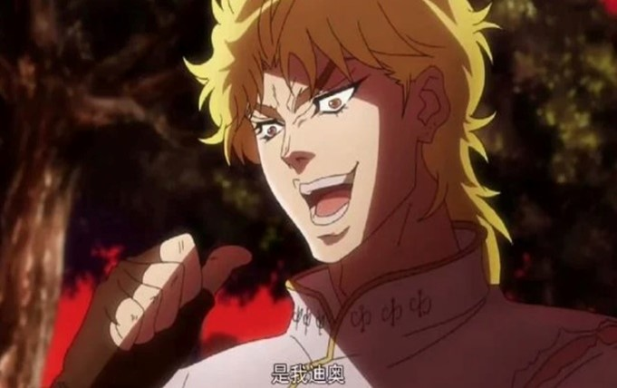
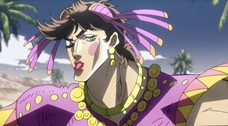
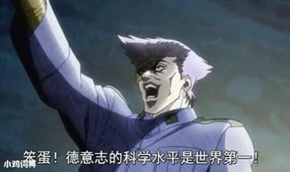
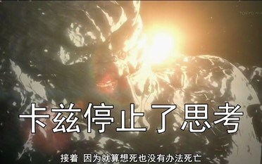
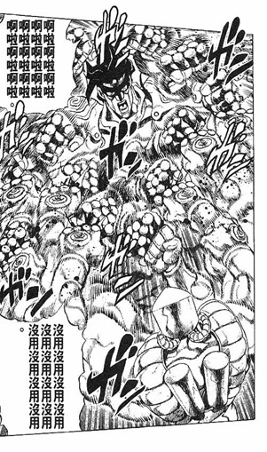
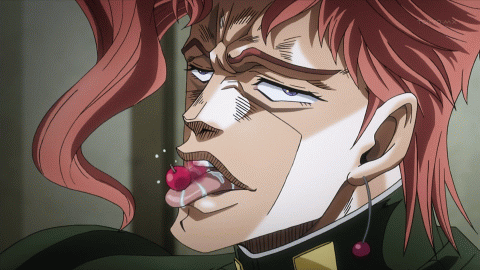
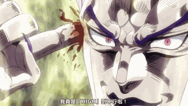
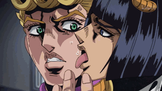

JOJO在許多動畫作品中是相對奇特的，而另許多人印象深刻的名場面，那就是JOJO梗，這裡將挑幾個比較有名的
1. 是我DIO噠(このDIOだ！)
是由梗圖製造機、人稱「Dio爺」的角色迪奧·布蘭度說出來的！這個經典名場面出自《JOJO的奇妙冒險》第一部《幻影之血》，當時迪奧為了擊垮仇敵JOJO，特地帶著兩個小弟攔截了JOJO的初戀女友艾莉娜並直接強吻對方！之後迪奧對艾莉娜說：「你和JOJO接過吻了嗎？還沒有吧，你的初吻不是JOJO的，而是我迪奧噠！」 因表情過於魔性而成為相當有名的梗
2. 我不做人啦!JOJO!
這也是出自第一部幻影血脈中，DIO的台詞迪奧請求JOJO能親自給他帶上手銬；在JOJO走近迪奧前，迪奧說了一堆廢話來吸引JOJO的注意力，等到JOJO接近迪奧時，迪奧突然拿出石鬼面和刀，大喊道：“我不做人了，JOJO！”（おれは人間をやめるぞ！ ジョジョ──ッ！！）隨後，迪奧用刀刺向JOJO其中這一句對於迪奧變成了吸血鬼的逆轉勝作出了簡潔的描述，促使了它成為了JOJO梗之一
3. 龍舌蘭姑娘
出自第二部戰鬥潮流，為了營救乾爹史比特瓦根，喬瑟夫潛入納粹營地。一開始他打算女裝潛入，但馬上就被發現了。由於打扮過於令人印象深刻，也促成了這個JOJO梗
4. 我大德意志的科技天下第一
出於《JOJO的奇妙冒險》第2部戰鬥潮流中，納粹軍官魯多爾·馮·修特羅海姆在掀開自己身上裝設的機關砲時，一時興起所說的愛國發言。也因為JOJO的奇妙冒險TV動畫中聲優伊丸岡篤的實力演出，使得這句簡簡單單的台詞變得極具衝擊力。這句話早在90年代已經在日本成為著名的梗
5. 於是，卡茲放棄了思考
《JOJO的奇妙冒險》第二部戰鬥潮流，最終戰中大BOSS卡茲在喬瑟夫·喬斯達的戰略中被射出到大氣層外。卡茲想用身體噴氣返回地球，但因宇宙低溫的環境身體被凍結；儘管發動了各種能力但仍無濟於事。卡茲最終化成為介於礦石和生物之間的生命體。無法返回地球，永遠的在宇宙中徘徊。想死也死不了，最後卡茲停止了思考。這一段對於一個全能的反派面對著一個全程不可反抗的困局所產生的喜感，以及精緻的描述，令讀者印象深刻，讓放棄思考一詞流行起來。
6. 歐拉/無駄
JOJO角色的吼聲，在其他語系中並沒有類似的發音由於其過於令人印象深刻，成為了一個JOJO梗
7. レロレロレロレロレロレロ(rerorero)
JOJO第三部中，敵人ラバーソール偽裝成花京院的模樣出現在承太郎面前時，將櫻桃放在舌頭上玩弄所發出的聲音。承太郎打倒敵人後，正牌的花京院也將櫻桃放在舌頭上玩弄， 並發出了相同的聲音拜2014年動畫版所賜，「レロレロ」一詞被選為《2014年動畫流行語大賞》金賞項目
8. 真是HIGH到不行
《JOJO的奇妙冒險》第三部星塵鬥士，最終戰中DIO在吸收了喬瑟夫的血後恢復了作為吸血鬼的全部能力，用替身“世界”停止時間的長度從5秒提升到了9秒，在停止的時間中對無法行動的承太郎以用手指插入大腦的奇妙姿勢說出了這句話，令人印象深刻。
9. 但是我拒絕（だが断（）(ことわ)る）
於JOJO第四部，不滅鑽石中，反派高速之星將配角岸邊露伴捉住，提出由露伴將仗助引入自己的陷阱，作為交換可以饒露伴一命，於是發生了如下對話：“只……只要我把那傢伙給拖進來……交給你的話……你……你真的會……饒我一命嗎？”“嘻嘻~~當然，我可是說話算話的啦~~這算是以他的養分為籌碼的交易（Give&Take）啦……快……快點叫吧！”“但是我拒絕！”什麼！”“我岸邊露伴最喜歡做的事之一，就是對自認為很強的傢伙說「NO」……”由於其過於令人印象深刻，成為了一個JOJO梗

10. 這是說謊的味道
是出自《JOJO的奇妙冒險》第五部《黃金之風》的一個梗，布加拉迪為了調查淚眼魯卡(剛開場主角遇到的混混)的死因而與喬魯諾接觸。由於布加拉迪自稱擁有通過辨別汗的味道來判斷是否說謊的能力，在觀察喬魯諾的表情無果後，通過將淚眼魯卡的右眼放入喬魯諾手中讓喬魯諾流汗，然後通過舔他的汗而判斷出他在“說謊”
